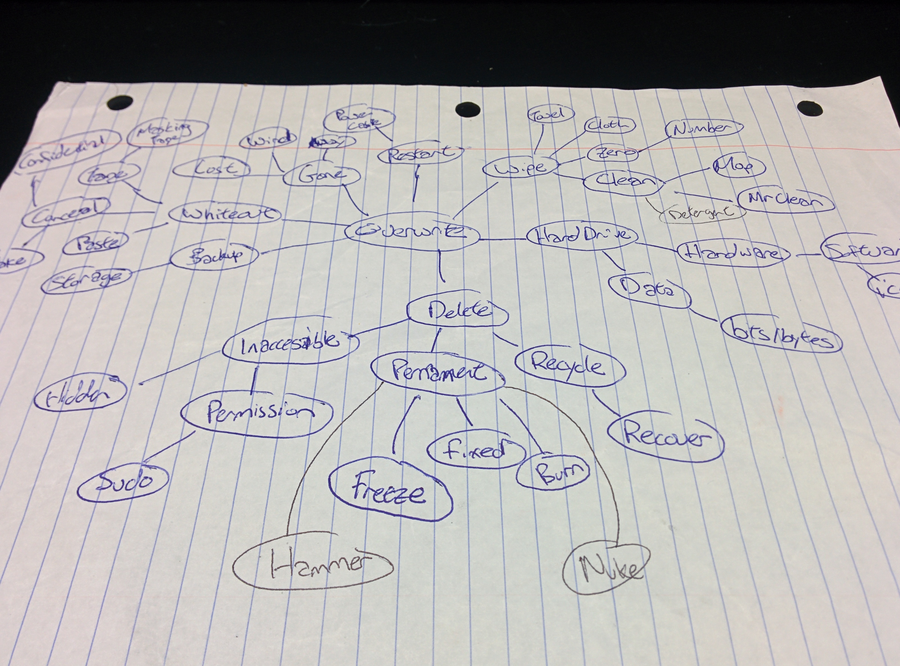
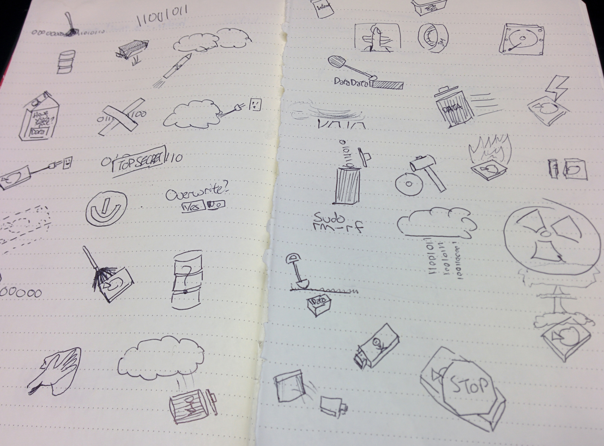
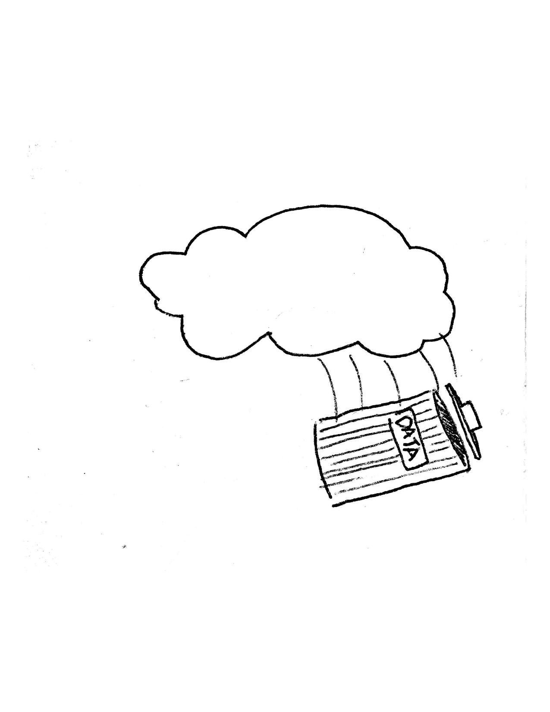
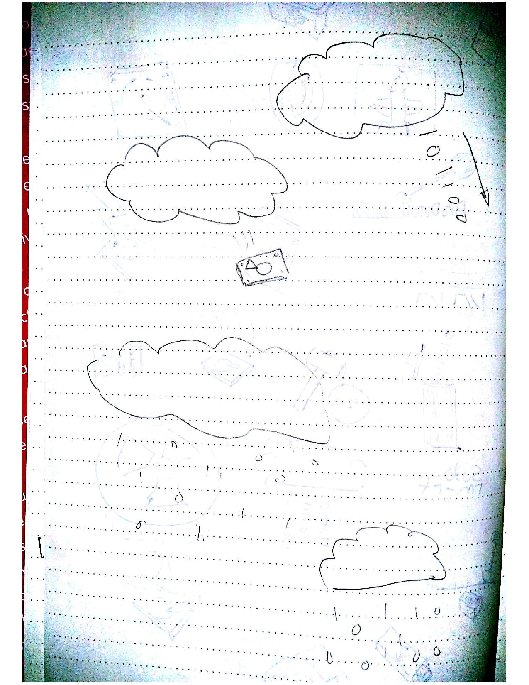
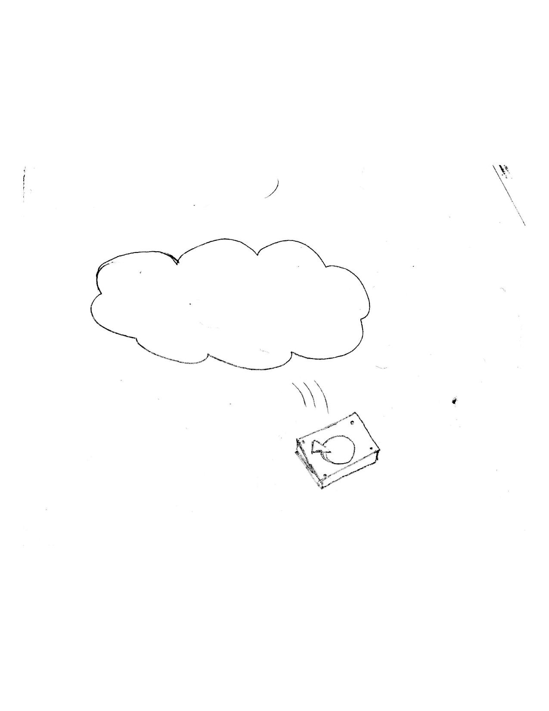

During this project, after being assigned an app topic, the overall goal was to design an icon for it that not only scaled well, but was also effective in conveying the idea of what the app is meant to do.
First, groups with similar app topics sat together to brainstorm ideas. In my case, it was an app to permanently delete personal information from the internet. We asked ourselves, “What comes to mind when thinking about an app like this? What are some related ideas?” From this, we each wrote down several words relating to the idea, and shared them with the group.
One such example from this initial brainstorm
After discussing each one with this group, we each went our separate ways by choosing one word, and using that as a base for the rest of the project. The word I chose was “overwrite”, as can be seen in the image above. Following this, I created a mind-map from the word; that is, found as many related words and ideas to the initial “overwrite” as possible (e.g., “data”, “white-out”, “wipe”). After coming up with 40, I then quickly sketched each of them out.
The resulting mind map
Some low fidelity sketches based on the mind-mapping exercise
I then chose a couple from this set that I felt were better for representing the app, that is, less likely to be misunderstood, and re-sketched them in higher fidelity.

Candidate #1
Candidate #2
Candidate #3
At this point, I went to get peer feedback and review from my classmates and T.A. Using this feedback, I decided on what worked and what didn’t work for each of the designs. (For instance, with the hard drive falling out of the cloud, it was decided that the hard drive icon may be more difficult for people to understand). As a result, I picked the first design, as the other one had too many little details (the little 0s and 1s coming out of the cloud), and would likely not work well when scaled to smaller sizes.
In the end, I revised my chosen icon based on recommendations (mostly suggesting a decrease in detail) and created a 'scalable’ version of it in Adobe Illustrator.
The final design
In conclusion, one problem I had encountered didn’t show up until the end; the issue of scalability. When approaching smaller sizes, the icon would begin to merge into one unintelligible blob. This issue could have been resolved by further decreasing the amount of detail in the icon, especially on the text on the trash can.